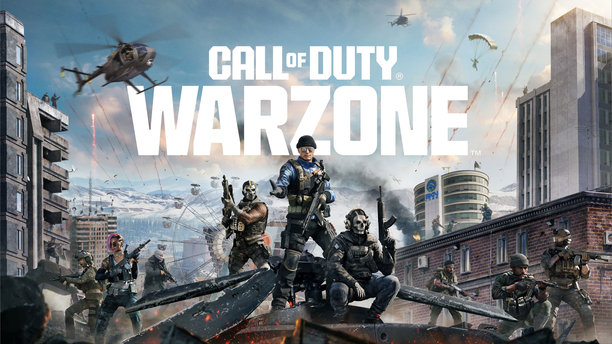

Call of Duty Warzone Best Settings Guide (2025)

This guide outlines the best Warzone settings to maximize FPS, reduce input lag, and improve enemy visibility. These settings are suitable for competitive play and consistent performance.
Best Graphics Settings
- Display Mode: Fullscreen Exclusive
- V-Sync: Off
- Texture Resolution: Normal
- Texture Filter Anisotropic: Low
- Particle Quality: Low
Best Performance & FPS Settings
Lowering heavy visual effects provides smoother gameplay and improves response time during gunfights.
- On-Demand Texture Streaming: Off
- Cache Spot Shadows: On
- Cache Sun Shadows: On
- Dynamic Resolution: Off
- FPS Limit: Match or slightly exceed monitor refresh rate
Visibility & Competitive Settings
- Motion Blur (World & Weapon): Off
- Film Grain: 0.00
- Depth of Field: Off
- Brightness: Adjust so dark areas remain visible without washout
Conclusion
These Warzone settings focus on performance and clarity rather than visual fidelity. Competitive players should prioritize stable FPS and quick target identification over graphics quality.